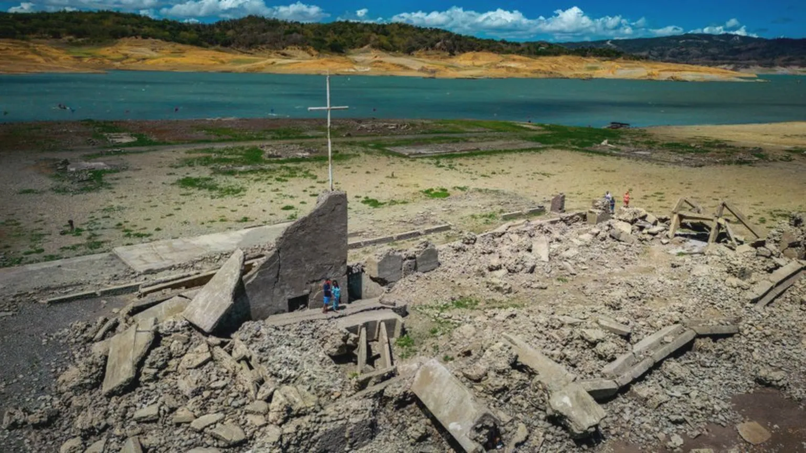

Question . Travel
Philippines: Drought dries up dam to reveal centuries-old town
The ruins of an almost 300-year-old town have resurfaced as searing temperatures in the Philippines partially dried up a major dam.
 Jenny Wilson
Posted at 05 May 2024 13:00
Jenny Wilson
Posted at 05 May 2024 13:00
text
 Andrianto Hadi
Andrianto Hadi
Pantabangan town was submerged in the 1970s to build a reservoir. But it emerges from the water on extremely rare occasions, when the weather is dry and hot. It comes as almost half the country is experiencing a drought, with temperatures reaching highs in several areas. This is the longest the town has ever been above water since the dam was constructed, Marlon Paladin, an engineer with the state agency that operates the country's dams, told news agency. The extreme heat has disrupted the daily lives of millions as schools are shut for days and office workers are advised to work from home. And it could still get marginally hotter in the coming days, Benison Estareja, a meteorologist at the state-run weather bureau Pagasa, told BBC News. "The general impact of climate change on the Philippines is warmer temperatures. The heat that we are experiencing, it could steadily increase in the coming days," Mr Estareja said.